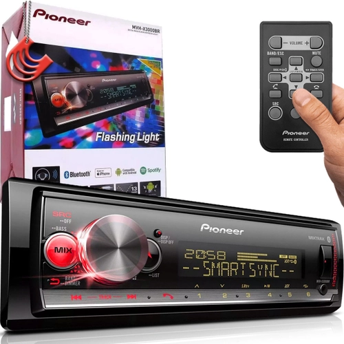
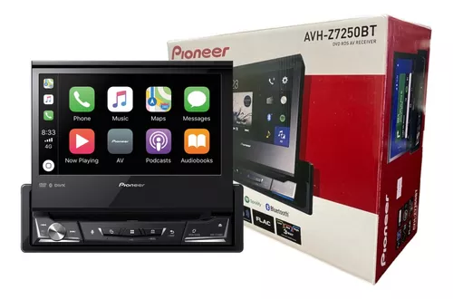
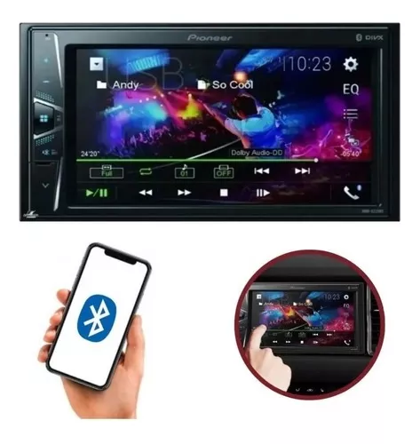

-

Pioneer MVH X3000
Com Bluetooth: Sim
Com USB: Sim
Potência máxima de saída: 50 W
Com leitor de cartão SD: Não
Com comando de voz: Sim
Características principais
Formato de venda
UnidadeConectividade
Com Bluetooth Sim
Com USB Sim
Com leitor de cartão SD Não
Com adaptador de entrada auxiliar Sim
Com reprodutor de CD Não
Com saída RCA Sim
Com conexão múltipla de dispositivos Sim
Compatibilidade
Sistemas operacionais compatíveis Android, iOS
Aplicações compatíveis Spotify, Pioneer Smart Sync
Dimensões Largura x Profundidade x Altura 178 mm x 97 mm x 50 mm
Características gerais
Marca Pioneer
Linha MVH
Modelo X3000
Cor Preto
OutrosInclui controle remoto Sim
Com cor de luz variável Sim
Especificações
Uso recomendado Automotor
intonizações da rádio FM, AM
SPotência máxima de saída 50 W
otência de saída (RMS) 23 W
PCom painel frontal destacável Sim
Com equalizador Sim
Com comando de voz Sim
Conferir todas as características
Descrição
Com este som automotivo da Pioneer, as viagens no seu veículo serão mais divertidas, pois tem a capacidade de sincronizar a iluminação piscando com a música que você quiser ouvir. Com sua tecnologia Bluetooth, você pode criar conexões sem cabos no meio. Por sua vez, reproduz arquivos no formato MP3, WMA, WAV, AAC ou FLAC e é compatível com Spotify.
Maior conectividade
Não se preocupe pela música, seu companheiro pode conectar o telefone dele sem desconectar o seu. Você vai poder emparelhar mais de um dispositivo simultaneamente!
Segurança e conforto
Quando estamos dirigindo, é importante evitar distrações. Com este dispositivo você poderá usar a sua voz para procurar aquela música que você gosta tanto ou encontrar sua estação de rádio favorita.
Mais potência e melhor qualidade
Um equalizador de som é a ferramenta que amplifica e atenua certas frequências num sinal de áudio. Ou seja, ajusta a qualidade do som que você vai ouvir. Graças a esta ferramenta, integrada no seu aparelho, você obtém a melhor experiência ao reproduzir a sua música favorita.
R$599,00
Carrinho
Total: 0.00
-

Retratil Pioneer Avh-z7250bt
Descrição AVH-Z7250BT Receptor AV multimídia em DVD 1-DIN com tela sensível ao toque WVGA de 7'', Apple CarPlay, Android Auto, WebLink, Bluetooth embutido e reprodução de vídeo Full HD a partir de dispositivo USB.
INTEGRAÇÃO COM SMARTPHONE Apple Car Play - USB Android Auto - USB WebLinki - Phone / Android Controle direto para iPod / iPhone - USB / Bluetooth Controle direto para determinados telefones Android - USB / Bluetooth Spotify - Sim Bluetooth embutido - Bluetooth duplo Waze ( via Apple CarPlay ou Android Auto ) - Sim Memória de emparelhamento de smartphone - 5 dispositivos
FUNÇÕES BÁSICAS Tamanho da tela - 7" Tamanho da DIN - 1 DIN Tipo de tela - Resistivo claro Painel de cores verdadeiras de 24 bits - Sim Preouts da RCA - 3 ( 4V ) Entradas da câmera - Pronto para entrada de câmera dupla Porta USB - Traseira Carga rápida USB para Android ( CDP ) - Sim Entrada AUX ( mini-jack de 3,5 mm ) - Sim
REPRODUÇÃO DE MÍDIA Reprodução de CD / DVD - Sim Compatível com HDD NTFS - Sim MP3 / WMA / AAC / WAV - DVD / CD / USB Reprodução FLAC - USB Reprodução de vídeo em Full HD - USB Reprodução DivX / MP4 - DVD / CD / USB Reprodução H264 / WMV - USB
TUNER Super sintonizador IIID - Sim 24 estações / 6 predefinições - Sim RDS - Sim
ÁUDIO Amplificador embutido: MOSFET 50Wx4 - MOSFET 50 W x 4 Preouts de RCA de alta voltagem - 3 ( 4 V ) Conversor D / A - 96 kHz / 24 bits Peças de áudio especializadas - Sim Alinhamento automático de EQ e tempo automático ( CD-MC20 obrigatório ) - Sim Modo de rede de 3 vias ( Alto / Médio / Baixo ) - Sim Rede de cruzamento - HPF / LPF Equalizador - Gráfico de 13 bandas Retentor de som avançado - Sim Controle de subwoofer - Sim
EM GERAL Entrada de vídeo - 1 ( Áudio / Vídeo ) Saída de vídeo - 1 Entrada RGB - Sim Personalização de cores - 5 cores de exibição, cores de 112 teclas Diretrizes para assistência ao estacionamento - Sim Controle de volume rotativo - Sim Controle remoto - Sim
Conteúdo da embalagem: 01x Multimidia retratil Avh-z7250bt 01x Controle Pioneer 01x Chicote de ligação 01x Microfone P1 01x Adaptador USB
R$4.939,90
Carrinho
Total: 0.00
-

2 Din Pioneer Dmh-g 228bt
Características: - Tela de 6.2" Touchscreen Resistiva - Ligações Hands-free e streaming de áudio (Bluetooth) - Rádio AM/FM - 2 Saídas RCA Pré-amplificadas (2V) - Entrada USB - Entrada para câmera de ré - Entrada para controle de volante - Entrada AUX - Reforçador de Graves (Bass Boost)
Especificações: Display / Tela: - 6.2" Touchscreen Resistiva - Resolução WVGA - Sistema de cores (NTSC / PAL / SECAM) - Cor dos botões (Azul) - Cor de destaque (5 cores) - Ajustes de imagem (brilho, contraste, cor, matiz e dimmer) - Modo Display Off
Integração Smartphone: - Compatível com Android (via USB/Bluetooth) ¹
Conexões: - Entrada USB (Frontal; Corrente máx. 0.5A) 4 - 2 Saídas de áudio pré-amplificadas (RCA) - Entrada AUX (Traseira; 3.5 mm estéreo; Áudio/Vídeo) - Entrada para câmera de ré (RCA) - Entrada para comando de volante (Configurável) - Microfone integrado - Conexão para conector ISO
Áudio: - Potência de saída RMS 23 W x 4 (50Hz a 15kHz, 10% THD, 4 Ohms) - Nível da saída pré-amplificada: 2V - Equalizador gráfico de 7 bandas - 6 equalizações pré-definidas e 1 personalizável - Fader / Balanço - Reforçador de Graves (Bass Boost): +6 dB a 0 dB - Loudness em 3 níveis
Bluetooth: - Conexão Bluetooth (Versão 4.1) ² - Bluetooth Audio Streaming (Músicas) ² - Bluetooth Hands-Free (Chamadas telefônicas, Histórico e Agenda) ² - Memória para registro de até 3 telefones
Sintonizador AM / FM: - BSM (busca e sintonia automática de estações) - Memória para gravar estações - 6 AM e 18 FM - RDS ³ - oferece informações de texto juntamente com a recepção de FM
Interface USB: - Padrão: USB 2.0 High Speed - Codec de Áudio: MP3 / WAV / WMA / AAC 4 - Codec de Vídeo: DivX / MPEG-1 / MPEG-2 / MPEG-4 4
Geral / Dimensões: - Fonte de alimentação nominal: 14,4V DC - Corrente máxima: 10A - Chassi: 178 x 100 x 159 mm - Face: 171 x 97 x 5 mm
Outros: - Garantia de 1 ano - Menu em Português, Inglês e Espanhol - Relógio e calendário na tela Acompanha: - Pioneer DMH-G228BT - Cabo de alimentação com conector ISO - Guia de início rápido - Lista de postos de assistência técnica
R$899,92
Carrinho
Total: 0.00